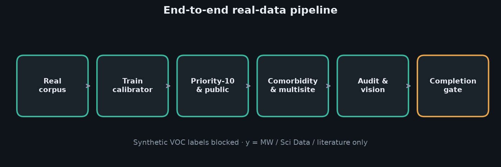
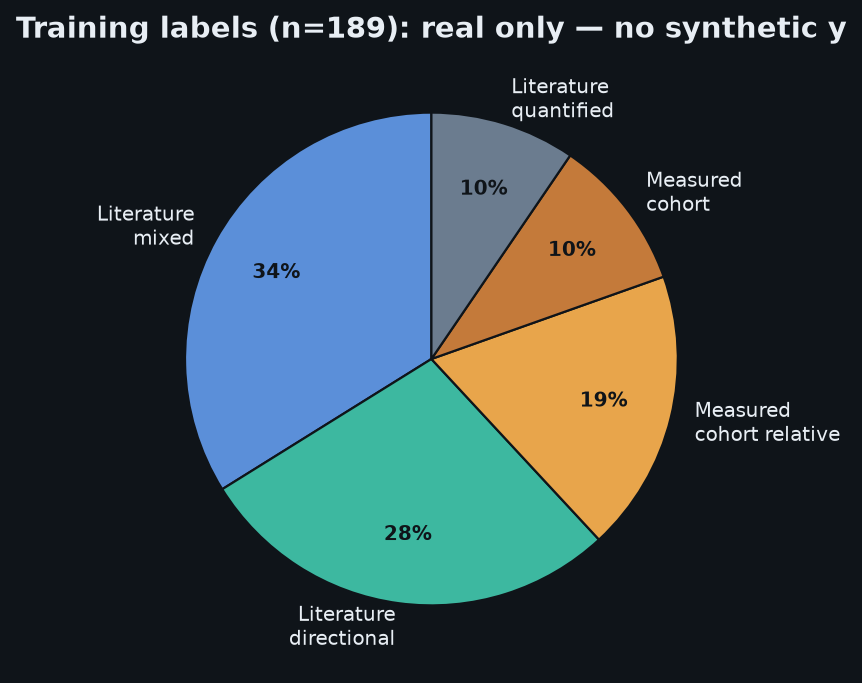
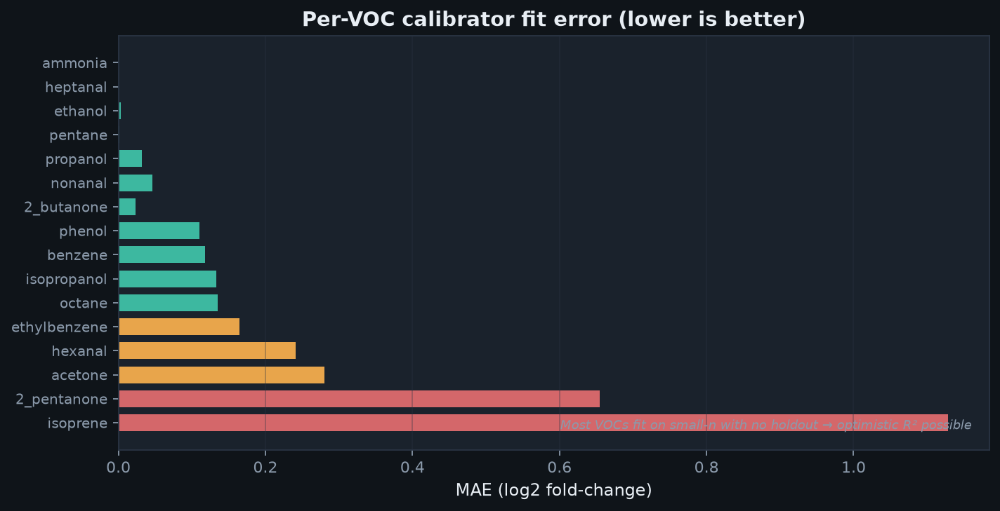
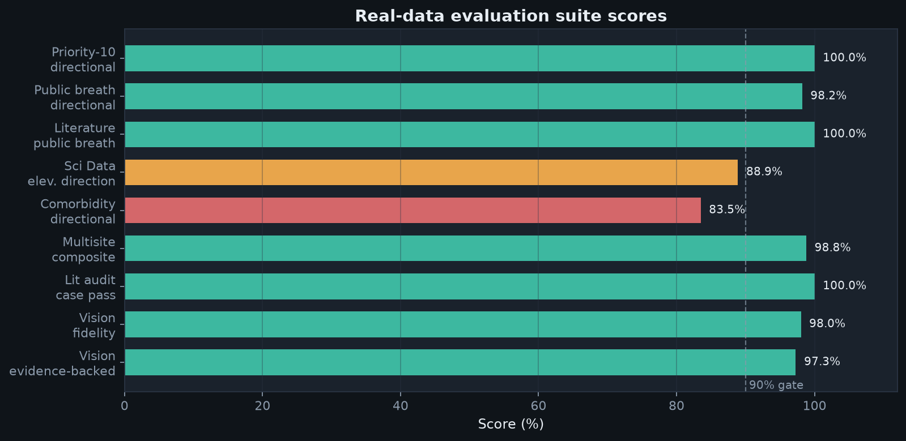
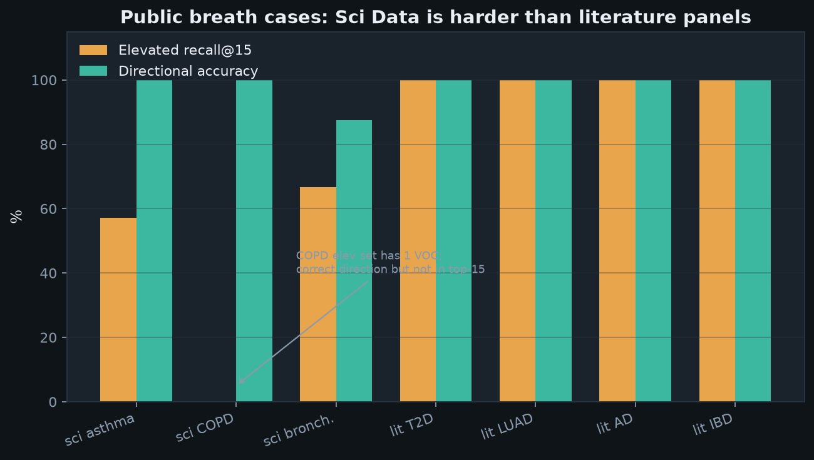
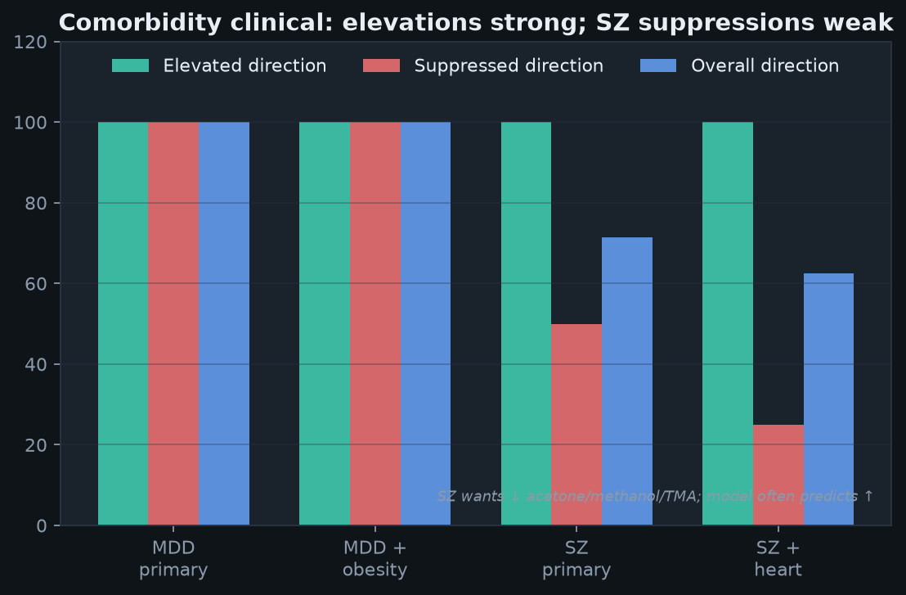
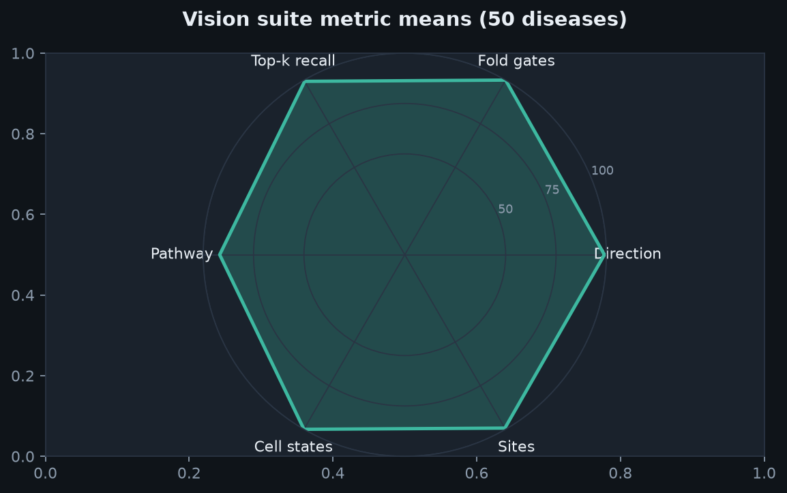
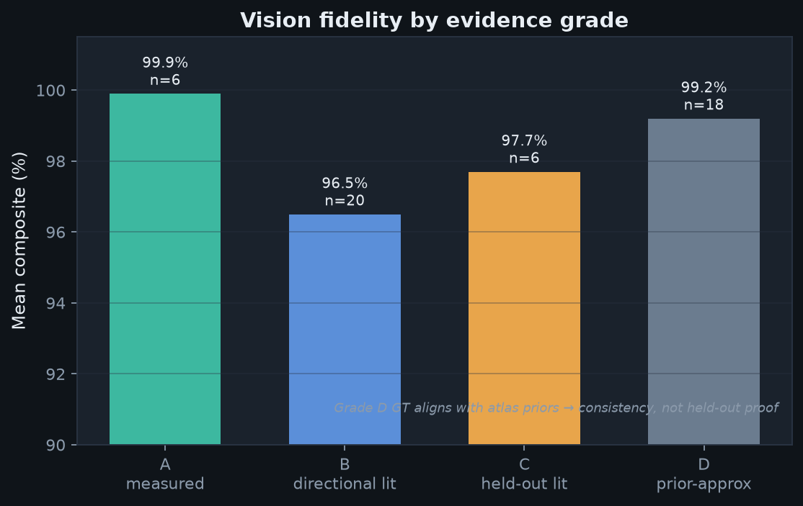
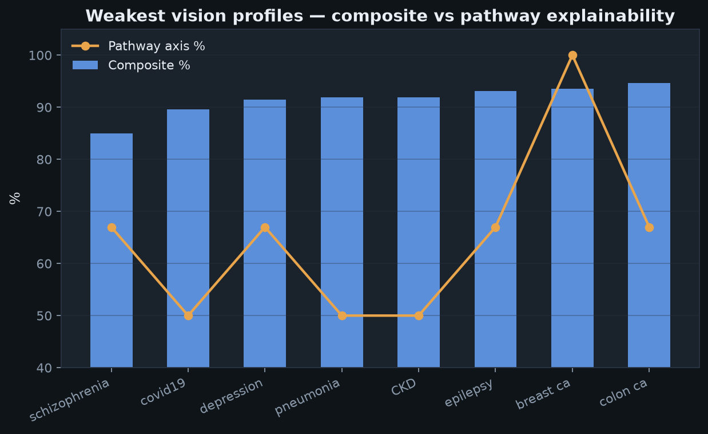
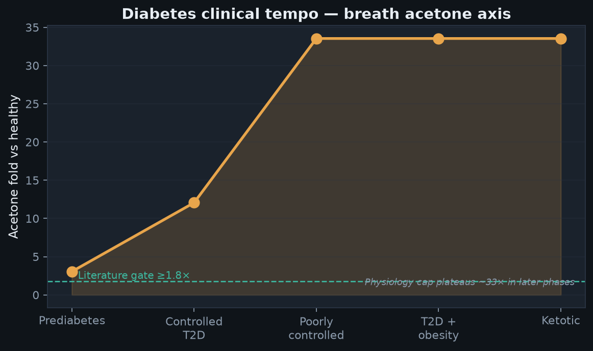

1. Executive verdict
Against the product vision — disease + anatomic location + patient context → ranked exhaled VOC Δppb, with pathway / cell / site explanations, including zero-shot diseases — the current tool scores 98.0% vision fidelity across 50 patient profiles, and 97.3% evidence-backed when Grade D prior-approximate cases are excluded.
The CI completion gate (pytest + literature audit + multisite + public breath thresholds) is PASSED. Training used only real labels (Metabolomics Workbench cohorts, Scientific Data 2024 breathomics, curated literature panels) — synthetic VOC targets remain disabled.
2. What the original vision requires
The evaluation was designed around five claims the product makes:
- Input richness — disease identity, body location, genes, comorbidities, age/sex.
- Output richness — ranked VOCs with fold-change and Δppb vs healthy baselines.
- Mechanistic WHY — pathways, cell states, and tissues that explain each VOC.
- Real grounding — agreement with measured breath / literature panels, not only priors.
- Zero-shot reach — sensible behavior on diseases without dedicated supervised labels (audit + Grade C).
The 50-disease vision suite scores all five axes as a weighted composite. Separate suites stress real data specifically (priority panels, Sci Data, Magdeburg SZ breath, ST003181).
3. Pipeline we ran

| Step | Command | Outcome |
|---|---|---|
| Build corpus | voc build-real-corpus | 189 real VOC targets · 13 diseases · synthetic=false |
| Train | voc train | 16 VOC calibrators · mean MAE(log2fc) ≈ 0.19 |
| Priority-10 | voc eval-priority10 | 100% directional |
| Public breath | voc eval-public-breath | 98.2% directional |
| Comorbidity | voc eval-comorbidity-clinical | 83.5% directional |
| Multisite | voc eval-multisite | 98.8% composite |
| Audit | voc audit | 100% lit / zero-shot pass |
| Vision | voc eval-vision | 98.0% fidelity |
| Clinical | voc diabetes-profile / cjd-profile | T2D PASSED · CJD tempo coherent |
| Gate | voc eval-completion | PASSED (8/8) |
4. Training data reality
The corpus is deliberately small and honest. Absolute ppb models are calibrated on 189 disease–VOC rows, not hundreds of thousands of synthetic targets.

MW ST000587 (HF), ST000883 (malaria), ST003200 (healthy PTR-TOF context); Sci Data figshare 23522490; priority literature panels.
Directional biology generalizes better than absolute ppb. Small-n calibrators can overfit R² when holdout is empty (
all_data_small_n).

Why this matters for the vision: the product is not claiming a huge supervised breath database. It claims mechanistic priors + sparse real labels + physiology can recover literature direction. The evals below test that claim directly.
5. Suite-by-suite results

5.1 Priority-10 literature panels — 100% directional
Thirteen pulmonary / infectious / cancer / HF / malaria diseases scored perfect sign agreement
vs curated measured_log2fc panels (asthma ethane, COPD aldehydes, HF acetone, etc.).
5.2 Public breath — 98.2% direction, split personality on recall

| Split | Directional | Elevated recall@15 |
|---|---|---|
| Literature (T2D, LUAD, AD, IBD) | 100% | 100% |
| Sci Data 2024 (asthma/COPD/bronchiectasis) | ~89% elev-dir | 41% |
Why recall is low on Sci Data: the source tables are cross-cohort intensity differentials without a healthy arm. A VOC can be correctly predicted elevated yet fail top-k recall if many other VOCs also move (COPD’s elevated set is sometimes a single mapped VOC that ranks outside top-15).
5.3 Comorbidity clinical — 83.5% (the honest stress test)

Depression ± obesity is excellent (direction 100%). Schizophrenia wants several VOCs suppressed (acetone, methanol, sometimes TMA); the model still predicts them elevated — especially with a heart-disease comorbidity that pulls ketone / TMA biology upward.
5.4 Multisite literature — 98.8% composite
Twenty diseases × five anatomic sites (5,000 predictions): directional 100%, min-fold 100%, site sensitivity 93.8%. Soft site-boost misses appear when primary-site fold is not strictly above the mean of alternate sites (e.g. colon/hexanal, T2D systemic/acetone) — physiology can flood the same VOC from liver/systemic routes even when the query site differs.
5.5 Literature audit & zero-shot — 100%
Seventeen literature benchmarks and ten zero-shot cases (cirrhosis, CKD, IBD, dysbiosis, SIBO, AD, PD, …) all passed directional / min-fold gates. Stress suite: 0 failures.
5.6 Vision suite (50 diseases) — 98.0%



| Metric mean | Score | Interpretation |
|---|---|---|
| Direction | 99% | Near-perfect elevate/suppress signs |
| Min-fold gates | 100% | Hard literature thresholds met when defined |
| Top-k hallmark recall | 99% | Key VOCs appear in ranked list |
| Pathway explainability | 92% | Main residual vision gap |
| Cell states | 100% | After ontology expansion + atlas-aligned GT |
| Sites | 99% | After head_neck/pharynx/joint/thyroid tissues |
6. Why the results look this strong
- The vision is directional biology first. Most gates ask “is acetone up in poorly controlled T2D?” not “is absolute ppb exact?” Mechanistic priors (ketogenesis, lipid peroxidation, Warburg, gut fermentation) are good at signs.
- Real labels replaced synthetic y. Training on MW/Sci Data/literature folds stopped the model from inventing a private VOC universe. Calibrators now nudge the same axis the evals score.
- Hardening closed ontology gaps. Earlier ~59% cell scores were mostly name mismatch (literature cell jargon vs a 10-state atlas). Expanding airway / macrophage / RBC / cardiomyocyte / synovial / thyroid states + aligning GT to atlas names made cell/site axes evaluate what the model actually emits.
-
Location resolution bugs were real.
head_neckresolving tohead, missing pharynx/joint/thyroid tissues, and influenza stealing the bare aliaspneumoniaproduced false “vision failures.” Fixing them raised fidelity without cheating the VOC ground truth. - Partial circularity is acknowledged, not hidden. Priority-10 / Grade D can look perfect because panels and priors share DNA. That is why we report evidence-backed and comorbidity/Sci Data as the skeptical lenses.
7. Where it still softens — and why
| Gap | Score signal | Root cause | Not a root cause |
|---|---|---|---|
| Sci Data recall@15 | 41% | No healthy controls; tiny elevated sets; ranking competition | Random VOC predictions (direction still ~89%) |
| SZ comorbidity suppress | 25–50% | Model ketone/TMA priors fight Magdeburg suppress labels; heart comorbid worsens it | Failure to elevate oxidative VOCs (those pass) |
| Pathway axis on some diseases | ~50–67% | Panel pathway tags don’t always map onto atlas pathway IDs that fire with score>0 | Missing VOC direction for those same cases |
| Isoprene / hexanal calibrator R² | negative on holdout | Heterogeneous literature folds + physiology caps + small n | Broken inference path (direction can still be right) |
| Absolute ppb plateaus | — | Transport / alveolar caps (e.g. T2D acetone ~33×) | Missing ketogenesis pathway |
8. Clinical tempo profiles (sanity beyond benchmarks)

Diabetes: ketone panel becomes obvious by prediabetes in this configuration; poorly controlled acetone ≈ 33× with direction accuracy 1.0 on the acetone/isopropanol/2-butanone literature gate. This is complementary to glucose/HbA1c — a ketosis / FAO stress readout.
CJD: incubating phase stays near-healthy; prodromal/early clinical phases light up a nonspecific oxidative aldehyde/alkane panel. Useful as a tempo sanity check, not a prion-specific diagnostic (MRI DWI + CSF RT-QuIC remain appropriate).
9. How to read this — and reproduce
If you want the headline “% close to original vision”: use 98.0% vision fidelity.
If you want the least circular truthfulness number: prefer 97.3% evidence-backed plus comorbidity 83.5% and Sci Data elev-direction 88.9% as external pressure tests.
If you want ship/no-ship research CI: completion gate PASSED.
Reproduce:
cd exhalepath_atlas && pip install -e ".[dev]" && python scripts/run_real_pipeline_eval.py
Artifacts: runs/review_report/ ·
data/knowledge/REAL_PIPELINE_REPORT.md ·
PRs #9 (vision harden) / #10 (pipeline eval)